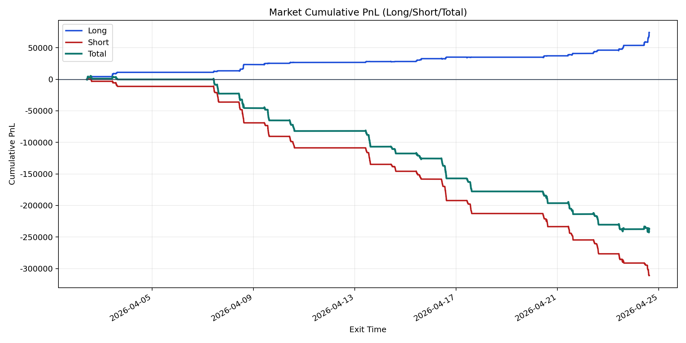
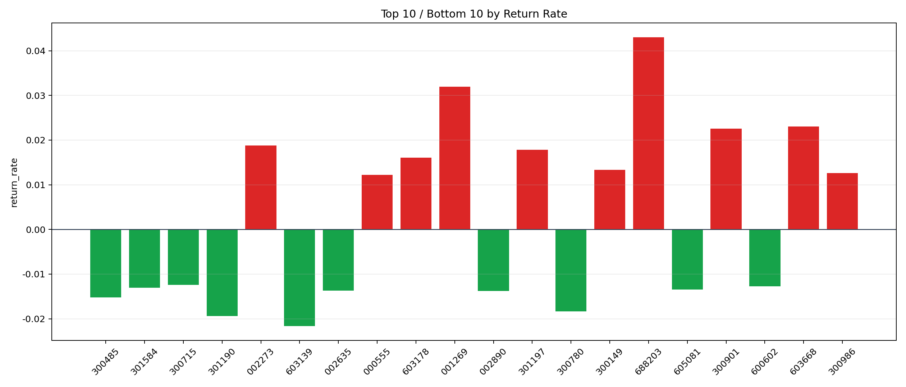

| repo_root | /home/haoranyou/data/output/alpha0.4_1w_5s_3ticks |
|---|---|
| period_months | 1 |
| period_label | 2026-04-02_to_2026-04-24 |
| start_time | 2026-04-02 09:50:57 |
| end_time | 2026-04-24 14:59:55 |
| n_trades | 23214 |
| n_symbols | 1006 |
| total_pnl | -236656.8370500002 |
| long_total_pnl | 74224.96920000002 |
| short_total_pnl | -310881.80625000026 |
| total_entry_notional | 220765846.0 |
| long_entry_notional | 26151432.0 |
| short_entry_notional | 194614414.0 |
| total_return_rate | -0.0010719812024274815 |
| long_return_rate | 0.0028382755177613224 |
| short_return_rate | -0.0015974243626682258 |
| top_symbols_by_return | ["688203", "001269", "603668", "300901", "002273", "301197", "603178", "300149", "300986", "000555"] |
| bottom_symbols_by_return | ["603139", "301190", "300780", "300485", "002890", "002635", "605081", "301584", "600602", "300715"] |

